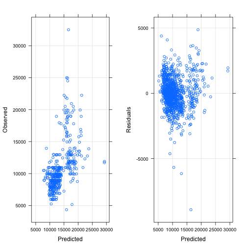

xwMOOC 기계학습
사례 - 도요타 중고차 가격 예측
학습목표
- 기본 예측모형을 살펴본다.
- 컴퓨팅 자원을 최대한 활용하는 예측모형을 개발한다.
- \(RMSE\)와 \(R^2\) 기준 예측모형 성능을 평가한다.
1. 예측모형 A-Z
데이터가 주어진 상태에서 어떤 예측모형이 가장 최적인지는 알 수가 없다. 단 하나의 모형으로 모든 데이터에 대한 예측모형으로 최적이라고 단언하는 예측모형도 존재하지 않는다.
즉, 데이터가 주어지면 최적의 모형을 예측하는데 있어 “공짜 점심”은 없다. 전통적인 방식부터 가장 정확도가 높은 모형까지 순차적으로 개발해 나가보자.

- 가장 단순한 모형을 데이터에 한번 적합시키고, 예측모형 개발자의 경험과 지식을 사용하여 가장 예측을 잘하는 모형을 추출해낸다.
- 다양한 예측모형을 모형개발자가 설정하고, R이 자동으로 특정 조건 예를 들어, \(R^2\), \(RMSE\), \(정확도\), \(민감도\), \(ROC\) 등을 최적화하는 모형을 교차타당도, 훈련/검증 데이터 기준, 붓스트랩 등의 방식으로 찾아낸다.
- 컴퓨터와 R을 사용한 예측모형개발의 경우, 시간과 자원이 많이 소요되기 때문에 가장 병렬 컴퓨팅 개념을 확장하여 작업의 효율성과 더불어 더욱 크고 복잡한 문제에 대한 예측모형을 제시한다.
2. 도요타 중고차 가격 예측 사례
Shmueli et al. (2010)1에서 소개된 데이터로 도요타 코롤라 중고차 가격을 정확하게 예측하는 것이 목표다.
ToyotaCorolla.csv 데이터는 GitHub에서도 다운로드 받아 바로 분석에 사용될 수 있다.
2.1. 데이터 준비
readr 팩키지를 사용하면 read_csv 함수에 인자로 웹URL을 넣으면 내부적으로 인터넷 데이터처리 핸들러가 있어 자동으로 불러올 수 있게 된다. tuc.df 데이터프레임으로 작명(Toyota Used Car)하여 데이터를 불러오고, caret 팩키지 createDataPartition 함수로 7:3으로 훈련데이터와 검증데이터로 쪼갠다.
##==============================================================================================
## 01. 데이터 가져오기
##==============================================================================================
# 1.1. 데이터 불러오기
suppressMessages(library(readr))Warning: package 'readr' was built under R version 3.2.5
suppressMessages(library(dplyr))Warning: package 'dplyr' was built under R version 3.2.5
suppressMessages(library(caret))
tuc.df <- read_csv("https://raw.githubusercontent.com/datailluminations/PredictingToyotaPricesBlog/master/ToyotaCorolla.csv")Parsed with column specification:
cols(
Price = col_integer(),
Age = col_integer(),
KM = col_integer(),
FuelType = col_character(),
HP = col_integer(),
MetColor = col_integer(),
Automatic = col_integer(),
CC = col_integer(),
Doors = col_integer(),
Weight = col_integer()
)
dim(tuc.df)[1] 1436 10
# 1.2. 훈련데이터, 검증데이터
in_train <- createDataPartition(tuc.df$Price, p = .7, list = FALSE)
tuc.train.df <- tuc.df[in_train, ]
tuc.test.df <- tuc.df[-in_train, ]2.2. 데이터 정제
도요타 중고차 데이터가 이미 전처리되어 정제되어 있기 때문에 데이터 정제 및 전처리 과정은 생략한다.
##==============================================================================================
## 02. 데이터 정제 및 전처리
##==============================================================================================
# 생략2.3. 예측모형 개발
전통적인 수작업 예측모형개발 과정을 살펴보고 컴퓨팅 자원과 지식을 활용한 예측모형개발 과정을 순차적으로 살펴본다.
2.3.1. 전통 수작업 예측모형 개발
훈련데이터와 검증데이터로 우선 나누고 나서, 각 모형에 훈련데이터를 넣고, 적합시킨 예측모형에 검증데이터를 넣어 예측을 순서대로 진행해 나간다. 선형회귀모형, 강건 선형회귀모형, PLS(Partial Least Square, 부분최소자승법), 능선회귀모형을 예측모형으로 사용하고, 검증데이터를 넣어 성능을 예측한다.
##==============================================================================================
## 03. 예측 모형 개발
##==============================================================================================
#-----------------------------------------------------------------------------------------------
# Y변수와 X변수 구분
# 훈련 데이터
tuc.train.Y <- tuc.train.df$Price
tuc.train.X <- tuc.train.df %>% select(-Price)
# 검증 데이터
tuc.test.Y <- tuc.test.df$Price
tuc.test.X <- tuc.test.df %>% select(-Price)
#-----------------------------------------------------------------------------------------------
# 예측모형 적합
# 3.1. 선형회귀모형
tuc.lm.m <- lm(Price ~ ., data = tuc.train.df)
tuc.lm.pred <- predict(tuc.lm.m, tuc.test.X)
tuc.lm.values <- data.frame(obs = tuc.test.Y, pred = tuc.lm.pred)
defaultSummary(tuc.lm.values) RMSE Rsquared
1645.2551971 0.8051162
# 3.2. 강건 선형회귀모형
suppressMessages(library(MASS))
tuc.rlm.m <- rlm(Price ~ ., data = tuc.train.df)
tuc.rlm.pred <- predict(tuc.rlm.m, tuc.test.X)
tuc.rlm.values <- data.frame(obs = tuc.test.Y, pred = tuc.rlm.pred)
defaultSummary(tuc.rlm.values) RMSE Rsquared
1683.7388061 0.7958306
# 3.3. PLS (Partial Least Square)
suppressMessages(library(pls))
tuc.plsr.m <- plsr(Price ~ ., data = tuc.train.df)
tuc.plsr.pred <- predict(tuc.plsr.m, tuc.test.X, ncomp = 1:2)
# 3.4. 능선 회귀모형(Ridge Regression)
suppressMessages(library(elasticnet)) # elasticnet
tuc.ridge.m <- enet(x = as.matrix(tuc.train.X[,-3]), y = tuc.train.Y, lambda = 0.001)
tuc.ridge.pred <- predict(tuc.ridge.m, newx = as.matrix(tuc.test.X[,-3]),
s = 1, mode = "fraction", type = "fit")
tuc.ridge.coef <- predict(tuc.ridge.m, newx = as.matrix(tuc.test.X[,-3]),
s = .1, mode = "fraction", type = "coefficients")
tuc.ridge.coef$coefficients Age KM HP MetColor Automatic CC Doors
-30.13668 0.00000 0.00000 0.00000 0.00000 0.00000 0.00000
Weight
0.00000
검증데이터의 종속변수와 예측모형에서 나온 종속변수 예측값과 산점도를 그려본다. 모형에서 예측된 값을 잔차와 함께 산점도로 도식화한다.
#------------------------------------------------------------------------------------
# 모형 시각화
# 1. 선형회귀모형
suppressMessages(library(gridExtra))
p.fit <- xyplot(tuc.test.Y ~ predict(tuc.lm.m),
type = c("p", "g"), xlab = "Predicted", ylab = "Observed")
p.resid <- xyplot(resid(tuc.lm.m) ~ predict(tuc.lm.m), add=TRUE,
type = c("p", "g"),
xlab = "Predicted", ylab = "Residuals")
grid.arrange(p.fit, p.resid, ncol=2)
2.3.2. 컴퓨팅을 활용한 예측모형 개발
교차타당도(cross-validation) 방법(10개 집단)을 사용해서 선형회귀모형, 강건 선형회귀모형, PLS(Partial Least Square, 부분최소자승법), 능선회귀모형, 라소 회귀방법을 적용하여 가장 최적의 모형을 선정한다.
#------------------------------------------------------------------------------------
# 컴퓨팅을 활용한 예측모형
# 0. 교차타당도 제어조건 설정
ctrl <- trainControl(method = "cv", number = 10)
# 1. 선형회귀모형
tuc.lm.tune <- train(Price ~ ., data = tuc.train.df,
method = "lm",
trControl = ctrl)
tuc.lm.tuneLinear Regression
1007 samples
9 predictor
No pre-processing
Resampling: Cross-Validated (10 fold)
Summary of sample sizes: 907, 905, 907, 907, 905, 907, ...
Resampling results:
RMSE Rsquared
1213.993 0.8855471
# 2. 강건 선형회귀모형
tuc.rlm.tune <- train(Price ~ ., data = tuc.train.df,
method = "rlm",
trControl = ctrl)
tuc.rlm.tuneRobust Linear Model
1007 samples
9 predictor
No pre-processing
Resampling: Cross-Validated (10 fold)
Summary of sample sizes: 905, 906, 907, 907, 907, 906, ...
Resampling results:
RMSE Rsquared
1221.612 0.8796729
# 3. 부분최소자승모형
tuc.plsr.tune <- train(Price ~ ., data = tuc.train.df,
method = "pls",
preProc = c("center", "scale"),
tuneLength = 20,
trControl = ctrl)
tuc.plsr.tunePartial Least Squares
1007 samples
9 predictor
Pre-processing: centered (10), scaled (10)
Resampling: Cross-Validated (10 fold)
Summary of sample sizes: 906, 906, 906, 905, 907, 907, ...
Resampling results across tuning parameters:
ncomp RMSE Rsquared
1 1534.532 0.8089126
2 1388.937 0.8458538
3 1285.898 0.8685475
4 1230.082 0.8795397
5 1226.702 0.8795170
6 1220.973 0.8803446
7 1220.801 0.8802879
8 1216.400 0.8813875
9 1216.528 0.8814116
RMSE was used to select the optimal model using the smallest value.
The final value used for the model was ncomp = 8.
# 4. 능선회귀모형
ridgeGrid <- data.frame(.lambda = seq(0, .1, length = 15))
tuc.ridge.tune <- train(tuc.train.X[,-3], tuc.train.Y,
method = "ridge",
tuneGrid = ridgeGrid,
trControl = ctrl)
tuc.ridge.tuneRidge Regression
1007 samples
8 predictor
No pre-processing
Resampling: Cross-Validated (10 fold)
Summary of sample sizes: 906, 906, 907, 907, 905, 906, ...
Resampling results across tuning parameters:
lambda RMSE Rsquared
0.000000000 1229.739 0.8809887
0.007142857 1229.916 0.8810014
0.014285714 1230.362 0.8809695
0.021428571 1231.042 0.8809004
0.028571429 1231.927 0.8808005
0.035714286 1232.994 0.8806748
0.042857143 1234.223 0.8805275
0.050000000 1235.598 0.8803622
0.057142857 1237.105 0.8801817
0.064285714 1238.732 0.8799885
0.071428571 1240.469 0.8797848
0.078571429 1242.307 0.8795723
0.085714286 1244.239 0.8793525
0.092857143 1246.257 0.8791266
0.100000000 1248.357 0.8788959
RMSE was used to select the optimal model using the smallest value.
The final value used for the model was lambda = 0.
# 5. 라소 회귀모형
enetGrid <- expand.grid(.lambda = c(0, 0.01, .1),
.fraction = seq(.05, 1, length = 20))
tuc.lasso.tune <- train(tuc.train.X[,-3], tuc.train.Y,
method = "enet",
tuneGrid = enetGrid,
trControl = ctrl)
tuc.lasso.tuneElasticnet
1007 samples
8 predictor
No pre-processing
Resampling: Cross-Validated (10 fold)
Summary of sample sizes: 906, 907, 906, 906, 905, 907, ...
Resampling results across tuning parameters:
lambda fraction RMSE Rsquared
0.00 0.05 3327.498 0.7825124
0.00 0.10 3089.675 0.7825124
0.00 0.15 2859.472 0.7825124
0.00 0.20 2638.957 0.7825124
0.00 0.25 2430.884 0.7825124
0.00 0.30 2238.892 0.7825124
0.00 0.35 2074.010 0.7852647
0.00 0.40 1935.450 0.7945641
0.00 0.45 1801.337 0.8171827
0.00 0.50 1680.609 0.8332263
0.00 0.55 1572.715 0.8470914
0.00 0.60 1478.213 0.8569125
0.00 0.65 1400.773 0.8631942
0.00 0.70 1343.191 0.8667806
0.00 0.75 1304.381 0.8704795
0.00 0.80 1273.948 0.8749672
0.00 0.85 1251.076 0.8779865
0.00 0.90 1236.779 0.8795463
0.00 0.95 1227.795 0.8805412
0.00 1.00 1224.745 0.8805817
0.01 0.05 3329.432 0.7825124
0.01 0.10 3093.437 0.7825124
0.01 0.15 2864.910 0.7825124
0.01 0.20 2645.862 0.7825124
0.01 0.25 2438.957 0.7825124
0.01 0.30 2247.714 0.7825124
0.01 0.35 2083.307 0.7854234
0.01 0.40 1944.768 0.7946651
0.01 0.45 1810.833 0.8171012
0.01 0.50 1689.192 0.8329929
0.01 0.55 1581.916 0.8463637
0.01 0.60 1486.742 0.8563432
0.01 0.65 1408.088 0.8627889
0.01 0.70 1348.690 0.8665393
0.01 0.75 1308.795 0.8694378
0.01 0.80 1277.736 0.8741167
0.01 0.85 1253.892 0.8774040
0.01 0.90 1238.659 0.8791891
0.01 0.95 1228.973 0.8803459
0.01 1.00 1225.348 0.8805310
0.10 0.05 3338.437 0.7825124
0.10 0.10 3110.957 0.7825124
0.10 0.15 2890.268 0.7825124
0.10 0.20 2678.110 0.7825124
0.10 0.25 2476.767 0.7825124
0.10 0.30 2289.226 0.7825124
0.10 0.35 2130.568 0.7884747
0.10 0.40 1991.430 0.8000598
0.10 0.45 1857.366 0.8205602
0.10 0.50 1734.109 0.8346674
0.10 0.55 1625.059 0.8440931
0.10 0.60 1528.910 0.8534689
0.10 0.65 1444.980 0.8605441
0.10 0.70 1377.652 0.8649882
0.10 0.75 1329.331 0.8674261
0.10 0.80 1301.833 0.8683743
0.10 0.85 1279.132 0.8717199
0.10 0.90 1260.028 0.8750238
0.10 0.95 1248.951 0.8770922
0.10 1.00 1245.174 0.8779843
RMSE was used to select the optimal model using the smallest value.
The final values used for the model were fraction = 1 and lambda = 0.
5개 모형을 \(RMSE\)와 \(R^2\) 기준으로 가장 성능이 좋은 모형을 선정한다.
tuc.comp <- resamples(list(
LM =tuc.lm.tune,
RLM = tuc.rlm.tune,
PLS = tuc.plsr.tune,
Lasso = tuc.lasso.tune, Ridge = tuc.ridge.tune))
bwplot(tuc.comp, layout = c(2, 1),scales = list(relation = "free"),
xlim = list(c(0, 2500), c(0.5, 1)))